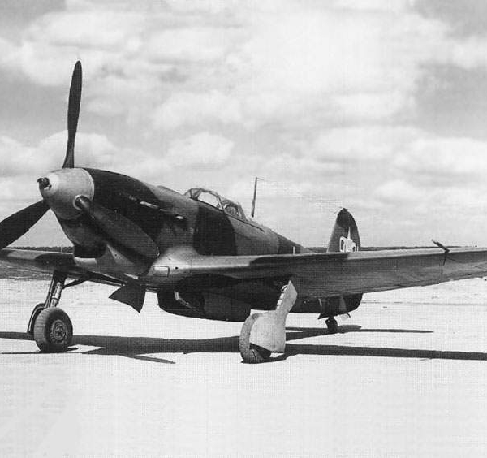

Як-9 - это третий по счету после Як-1 и Як-7 основной тип истребителя семейства "Як" периода Великой Отечественной войны. С конструктивной точки зрения он представлял собой дальнейшее развитие Як-7. Мало отличаясь от него по внешнему виду, Як-9 в то же время был во всех отношениях более совершенным. Это естественно, поскольку при создании этого самолета был учтен почти двухгодичный опыт производства и боевого применения Як-7 и имелась возможность более широкого применения дюралюминия, в котором страна испытывала уже не такие большие затруднения, как в начале войны. Использование металла позволило, в частности, существенно уменьшить массу конструкции, а выигрыш использовать либо для увеличения запаса горючего, либо для оснащения самолета более мощным вооружением и более разнообразным спецоборудованием.
Як-9 был самым массовым истребителем советских ВВС периода Великой Отечественной войны. В середине 1944 г. самолетов Як-9, Як-9Т и Як-9Д в сумме было больше всех других находившихся на вооружении истребителей вместе взятых и они в большой мере заменили Як-1 и Як-7Б на основных фронтах. Выпуск Як-9 на заводе N153 достигал 20 самолетов в день.
Як-9 выпускался на трех крупных заводах (NN 153, 166, 82), принимал участие во всех операциях Советской Армии, начиная со Сталинградской битвы. Это один из последних и один из лучших винтомоторных истребителей второй мировой войны. Все его модификации обладали отличными летно-тактическими характеристиками, не имели значительных конструктивных или эксплуатационных дефектов, приводящих к авариям .
Главной особенностью Як-9 являлась его способность модифицироваться в самые разнообразные по назначению и по боевому применению типы самолетов, включая фронтовой истребитель с обычным и тяжелым вооружением, истребитель дальнего сопровождения, истребитель-бомбардировщик, истребитель-фоторазведчик, высотный истребитель-перехватчик, двухместный невооруженный пассажирский самолет специального назначения, двухместный учебно-тренировочный и вывозной истребитель.
Як-9 имел 22 основных модификации, из которых 15 строились серийно. На Як-9 устанавливались пять различных новых и модифицированных типов двигателей, шесть вариантов числа и объема бензобаков, семь вариантов вооружения и два варианта спецоборудования. Кроме того, у Як-9 было две существенно отличавшихся разновидности крыла: смешанной и цельнометаллической конструкций. Все модификации Як-9, кроме исходной конструкции, имели специальные индексы.
Як-9 серийно выпускался шесть лет - с октября 1942 г. по декабрь 1948 г. Всего построено 16769 самолетов. Первым серийным самолетом стал Як-9 с двигателем М-105ПФ. Як-9 с двигателем М-105ПФ и винтом ВИШ-61П являлся фронтовым истребителем. Он представлял собой серийный самолет, прототипом для которого послужил облегченный вариант самолета Як-7ДИ. От последнего Як-9 имел ряд отличий, основные из которых следующие: запас горючего и число бензобаков уменьшены соответственно с 500 кг и четырех баков до 320 кг и двух баков (на Як-7ДИ в облегченном варианте два консольных бака не заливались, на серийных Як-9 они отсутствовали); запас масла уменьшен с 50 до 26...30 кг; сняты бомбодержатели для наружной подвески бомб.
Вооружение Як-9 было аналогично Як-7ДИ - одна моторпушка ШВАК с боезапасом 120 снарядов и один (левый) синхроний пулемет УБС с боезапасом 200 патронов. Полетная масса по сравнению с облегченным вариантом Як-7ДИ увеличилась до 2870...2875 кг, что объяснялось в основном более низкой культурой производства и менее жестким массовым контролем на серийных заводах по сравнению с опытным производством ОКБ А.С.Яковлева.
Як-9 был очень маневренным как в вертикальной, так и в горизонтальной плоскостях, легким и приятным в управлении. Он имел значительное преимущество в воздухе перед другими отечественными истребителями и истребителями противника. Например, в бою на вертикалях Як-9 заходил в хвост Me-109F после первого же боевого разворота, а в бою на горизонталях - после 3...4 витков виража.
Як-9 М-105ПФ выпускали два завода: N153 - с октября 1942 г. по февраль 1943 г. (с 1-й по 3-ю серию, последний самолет - N03-51), всего 195 самолетов; и N 166-с января по август 1943 г. (с 1-й по 6-ю серию), всего 264 самолета. Таким образом, в общей сложности построено 459 самолетов Як-9 М-105ПФ.
Впервые в боевых действиях Як-9 принял участие во время советского контрнаступления под Сталинградом во второй половине декабря 1942 г.
В июне 1943 г. в районе Курска на серийных самолетах Як-9 из-за неосвоенности технологии производства имело место несколько случаев отрыва деревянной обшивки от каркаса крыла в полете. Этот дефект устранялся по мере его появления бригадами ОКБ и серийных заводов непосредственно в строевых частях. В мае 1944 г. на Як-9М и последующих модификациях этот дефект был окончательно устранен.
Як-9 явился закономерным продолжением истребителей Як-1 и Як-7. С конструктивной точки зрения он представлял собой дальнейшее развитие Як-7. Мало отличаясь от него по внешнему виду, Як-9 в то же время был во всех отношениях более совершенным. Это естественно, поскольку при создании этого самолёта был учтен почти двухгодичный опыт производства и боевого применения Як-1, и имелась возможность более широкого применения дюралюминия, в котором страна испытывала уже не такие большие затруднения, как в начале войны. Использование металла позволило, в частности, существенно уменьшить массу конструкции, а выигрыш использовать либо для увеличения запаса горючего, либо для оснащения самолёта более мощным вооружением и более разнообразным спецоборудованием.
Як-9 был самым массовым истребителем советских ВВС периода Великой Отечественной войны. В середине 1944 г. самолётов Як-9, Як-9Т и Як-9Д в сумме было больше всех других находившихся на вооружении истребителей, вместе взятых, и они в большой мере заменили Як-1 и Як-7Б на основных фронтах. Выпуск Як-9 на заводе N153 достигал 20 самолётов в день.
Як-9 выпускался на трёх крупных заводах (№ 82 в Москве, № 153 в Новосибирске и № 166 в Омске), принимал участие во всех операциях Советской Армии, начиная со Сталинградской битвы. Все модификации истребителя обладали отличными лётно-техническими характеристиками, не имели значительных конструктивных или эксплуатационных дефектов, приводящих к авариям.
Самолёт был предельно прост по конструкции и приспособлен для производства в условиях военного времени. Почти все материалы, из которых он строился, вырабатывались в местах его изготовления.
Первым серийным самолётом стал Як-9 с двигателем М-105ПФ. Як-9 с двигателем М-105ПФ и винтом ВИШ-61П являлся фронтовым истребителем. Он представлял собой серийный самолёт, прототипом для которого послужил облегчённый вариант самолёта Як-7ДИ. От последнего Як-9 имел ряд отличий, основные из которых следующие: запас горючего и число бензобаков уменьшены соответственно с 500 кг и четырёх баков до 320 кг и двух баков (на Як-7ДИ в облегчённом варианте два консольных бака не заливались, на серийных Як-9 они отсутствовали); запас масла уменьшен с 50 до 26…30 кг; сняты бомбодержатели для наружной подвески бомб.
Вооружение Як-9 было аналогично Як-7ДИ — одна мотор-пушка ШВАК с боезапасом 120 патронов и один (левый) синхронный пулемёт УБС с боезапасом 200 патронов. Полётная масса по сравнению с облегчённым вариантом Як-7ДИ увеличилась до 2870…2875 кг, что объяснялось в основном более низкой культурой производства и менее жёстким массовым контролем на серийных заводах по сравнению с опытным производством ОКБ А. С. Яковлева.
Як-9 был очень маневренным как в вертикальной, так и в горизонтальной плоскостях, легким в управлении. Например, в бою на вертикалях Як-9 заходил в хвост Me-109F после первого же боевого разворота, а в бою на горизонталях — после 3-4 витков виража.
Як-9 М-105ПФ выпускали два завода: № 153 — с октября 1942 г. по февраль 1943 г. (с 1-й по 3-ю серию, последний самолёт — № 03-51), всего 195 самолётов; и № 166-с января по август 1943 г. (с 1-й по 6-ю серию), всего 264 самолёта. Таким образом, в общей сложности построено 459 самолётов Як-9 М-105ПФ.
Впервые в боевых действиях Як-9 принял участие во время советского контрнаступления под Сталинградом во второй половине декабря 1942 года.
В июне 1943 года в районе Курска на серийных самолётах Як-9 из-за неосвоенности технологии производства имели место несколько случаев отрыва деревянной обшивки от каркаса крыла в полёте. Этот дефект устранялся по мере его появления бригадами ОКБ и серийных заводов непосредственно в строевых частях. В мае 1944 года на Як-9М и последующих модификациях этот дефект был окончательно устранён.
В советской историографии истребителям Як отводилось особое место; свою роль в этом сыграли многократно переиздававшиеся книги А. С. Яковлева.
Часто советские истребители предвоенного поколения сравнивают с Bf 109E, на основе чего делается вывод, что Як-1, МиГ-3 и ЛаГГ-3 по совокупности характеристик превосходили немецкий истребитель. Однако серийное производство «E» началось в 1939 году, а перед нападением на СССР две трети истребительных групп люфтваффе, сосредоточенных на западных границах Советского Союза, полностью или частично перешли на Bf 109F-1. Осенью 1941 года на фронте появился Bf 109F-2, по всем параметрам превосходивший Як-1 с мотором М-105ПА.
Осенью 1941 года в НИИ ВВС проводились исследовательские воздушные бои с Bf 109F-2. Немецкий истребитель из-за боевых повреждений в своё время приземлился прямо на поле Тушинского аэродрома. У земли «Мессершмитт» обгонял Як-1 на 30 км/ч. На высоте 1000 м немецкий истребитель имел незначительное преимущество по вертикальному и горизонтальному маневрам; на высоте 3000 м Як-1 и «Мессершмитт» находились в равных условиях. На высоте 5000 м Як-1 имел явное преимущество и по максимальной скорости, и по вертикальной и горизонтальной маневренности. Однако, на принимавшем участие в бою «Мессершмитте» на высотах свыше 2750 двигатель не добирал мощности из-за неотрегулированной системы нагнетания. Начальник НИИ ВВС генерал Фёдоров в письме к А. С. Яковлеву от 24 декабря 1941 года писал, что «в настоящее время у нас нет истребителя с лётно-тактическими данными, лучшими или хотя бы равными Ме-109F.»
Положение отчасти выравнялось с появлением Як-1 с форсированным мотором М-105ПФ, который превосходил по скорости пятиточечный Bf-109G во всём диапазоне высот от земли до 5000 м; Як-1 обгонял трёхточечный «Мессершмитт» на высотах до 2000 м, выше немецкий самолёт летал быстрее, причём на семи километрах разница в скорости составляла уже 96 км/ч. Однако Bf 109G имел худшую по сравнению с «F» аэродинамику, и по маневренности на вираже Як-1 превосходил «Мессершмитт» на высотах до 5000 м. Як-7 обладал теми же достоинствами и недостатками, что и Як-1 — превосходил «Мессершмитт» на горизонталях и в наборе высоты на малых и средних высотах, практически не имел преимущества по максимальной скорости и уступал по большинству параметров на больших высотах.
Новые Як-9 и особенно Як-3 не уступали «Мессершмиттам» на малых и средних высотах.
Истребитель FW-190 считался на Восточном фронте более лёгким противником, чем Bf 109. Як-1 и Як-7 превосходили «Фокке-Вульф» по горизонтальной и вертикальной маневренности в диапазоне высот до 5000 м.
По вооружению Як-1 не уступал Вf 109F, однако появление «Густава», не говоря уже о FW-190, подорвало это равновесие. В какой-то мере положение исправили только Як-9Т, но это был самолёт не для среднего лётчика. Попытки достойно вооружить «Як» так и не привели к убедительным результатам. К концу войны считалось, что истребитель должен нести три-четыре пушки калибра 20-30 мм, исключением были только американские самолёты, имевшие исключительно мощное пулемётное вооружение, и «Яки». Правда, трёхпушечный Ла-7 тоже не стал массовым истребителем, но все же две пушки были лучше, чем пушка и пулемёт. Недовооружённость «Яков» отмечали многие известные лётчики, в частности, А. И. Покрышкин.
Согласно работам некоторых исследователей, большинство результативных лётчиков-истребителей ВВС РККА закончили войну или на самолётах Лавочкина, или на «Аэрокобрах». Однако, здесь надо иметь в виду, что Як-9 гораздо лучше других истребителей подходил для сопровождения ударных самолетов и его старались использовать соответственно, причем пилотам прямо запрещалось отрываться от «подопечных» для ведения боя, что значительно снижало их шансы на увеличение боевого счета. В отчётах по испытаниям истребителей «Як» отмечается исключительно удобное расположение приборов и органов управления в кабине, однако А. И. Покрышкин придерживался другого мнения: «Расположение приборов в кабине (имеется в виду Як-3) создавало для лётчика определённые неудобства». С другой стороны, маршал Савицкий считал истребители Яковлева лучшими самолётами такого класса.
Як-9Т, вооружённый 37-мм пушкой, был не самым массовым вариантом Як-9, однако именно на нём закончили войну многие асы. Он имел мощное вооружение вкупе с хорошими лётными характеристиками. В заключении по войсковым испытаниям отмечалось, что «самолётами Як-9Т целесообразно вооружать части с личным составом, хорошо владеющим воздушной стрельбой. Лётчик, летающий на Як-9Т, должен был быть своего рода снайпером и уметь поражать врага наверняка — с первого выстрела.»
|  |